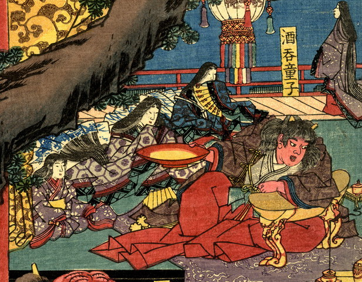

酒呑童子。多くの女性を従え、右手に酒盃を持って肘掛けにもたれ掛かっている。重の着物、緋袴という出で立ちで、前髪のある頭には2本の角が生えている。
著作者：錦朝樓芳虎／出典：親書誌：U426_nichibunken_0234：大江山鬼賊住家圖；オオエヤマキゾクスミカノズ／日付：2010／資源識別子：U426_nichibunken_0234_0005_0000
Copyright (c)2010- International Research Center for Japanese Studies, Kyoto, Japan. All rights reserved.